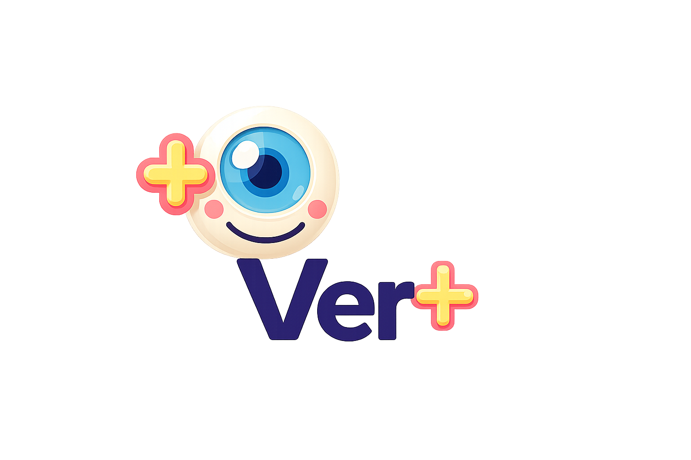

<!DOCTYPE html>
<html lang="es">

<head>
  <meta charset="UTF-8">

  <meta name="viewport"
        content="width=device-width, initial-scale=1.0">

  <meta name="description"
        content="Ver+ - Plataforma de monitoreo visual infantil para niños de 0 a 3 años">

  <title>Ver+ | Monitoreo Visual Infantil</title>

  <link rel="stylesheet" href="css/base.css">
  <link rel="stylesheet" href="css/layout.css">
  <link rel="stylesheet" href="css/components.css">

  <link rel="stylesheet" href="css/navbar.css">
  <link rel="stylesheet" href="css/home.css">
  <link rel="stylesheet" href="css/footer.css">

  <script src="https://unpkg.com/lucide@latest"></script>
</head>

<body>

  <div id="navbar"></div>

  <main>
    <section id="inicio">
      <div id="hero"></div>
    </section>

    <section id="caracteristicas">
      <div id="features"></div>
    </section>

    <section id="demo">
      <div id="demo"></div>
    </section>

    <section id="dashboard-demo">
      <div id="dashboard"></div>
    </section>
  </main>


  <script src="js/cargarComponentes.js"></script>
  <script src="js/pages/index.js"></script>

</body>
<footer class="home-footer">

  <div class="footer-brand">

    

    <h3>Ver+</h3>

    <p>
      Plataforma de monitoreo visual infantil para niños de 0 a 3 años.
      Facilita la detección temprana de alteraciones visuales mediante
      evaluaciones, seguimiento clínico y comunicación entre tutores y especialistas.
    </p>

  </div>

  <div class="footer-links">

    <h4>Plataforma</h4>

    <a href="#inicio">Inicio</a>
    <a href="#caracteristicas">Características</a>
    <a href="#dashboard-demo">Dashboard</a>

  </div>

  <div class="footer-links">

    <h4>Tutores</h4>

    <a href="registro.html">Crear cuenta</a>
    <a href="login.html">Iniciar sesión</a>

    <span>Pruebas visuales</span>
    <span>Historial clínico</span>
    <span>Biblioteca digital</span>
    <span>Reportes PDF</span>

  </div>

  <div class="footer-links">

    <h4>Especialistas</h4>

    <span>Pacientes asignados</span>
    <span>Evaluaciones médicas</span>
    <span>Consultas virtuales</span>
    <span>Recomendaciones médicas</span>
    <span>Seguimiento clínico</span>

  </div>

  <div class="footer-links">

    <h4>Servicios</h4>

    <span>Citas médicas</span>
    <span>Videoconsultas</span>
    <span>Monitoreo visual</span>
    <span>Desarrollo infantil</span>
    <span>Detección temprana</span>

  </div>

</footer>

<div class="footer-bottom">

  <p>
    © 2026 Ver+ | Plataforma de monitoreo visual infantil
  </p>

  <p>
    Desarrollado para la detección temprana y seguimiento de la salud visual infantil.
  </p>

</div>

</html>